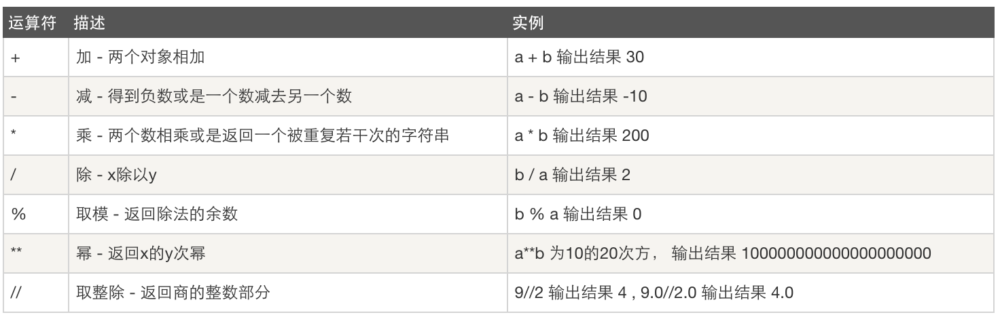
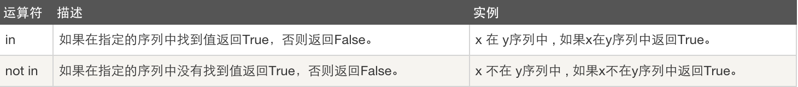

原文连接:https://www.cnblogs.com/huanglele/p/11657885.html
概要
- Python介绍
- Python安装
- Hello World程序
- 变量
- 字符编码
- 用户输入
- pyc是个什么鬼？
- 数据类型初识
- 数据运算
- 表达式if ...else语句
- 表达式while 循环
- 表达式for 循环
一、Python介绍
python的创始人为吉多·范罗苏姆（Guido van Rossum）。1989年的圣诞节期间，吉多·范罗苏姆为了在阿姆斯特丹打发时间，决心开发一个新的脚本解释程序，作为ABC语言的一种继承。
最新的TIOBE排行榜，Python赶超PHP占据第五， Python崇尚优美、清晰、简单，是一个优秀并广泛使用的语言。
Python可以应用于众多领域，如：数据分析、组件集成、网络服务、图像处理、数值计算和科学计算等众多领域。目前业内几乎所有大中型互联网企业都在使用Python，如：Youtube、Dropbox、BT、Quora（中国知乎）、豆瓣、知乎、Google、Yahoo!、Facebook、NASA、百度、腾讯、汽车之家、美团等。
编译和解释的区别是什么？
编译器是把源程序的每一条语句都编译成机器语言,并保存成二进制文件,这样运行时计算机可以直接以机器语言来运行此程序,速度很快;
而解释器则是只在执行程序时,才一条一条的解释成机器语言给计算机来执行,所以运行速度是不如编译后的程序运行的快的.
这是因为计算机不能直接认识并执行我们写的语句,它只能认识机器语言(是二进制的形式)

编译型vs解释型
编译型
优点：编译器一般会有预编译的过程对代码进行优化。因为编译只做一次，运行时不需要编译，所以编译型语言的程序执行效率高。可以脱离语言环境独立运行。
缺点：编译之后如果需要修改就需要整个模块重新编译。编译的时候根据对应的运行环境生成机器码，不同的操作系统之间移植就会有问题，需要根据运行的操作系统环境编译不同的可执行文件。
解释型
优点：有良好的平台兼容性，在任何环境中都可以运行，前提是安装了解释器（虚拟机）。灵活，修改代码的时候直接修改就可以，可以快速部署，不用停机维护。
缺点：每次运行的时候都要解释一遍，性能上不如编译型语言。
Python的优缺点
先看优点
- Python的定位是“优雅”、“明确”、“简单”，所以Python程序看上去总是简单易懂，初学者学Python，不但入门容易，而且将来深入下去，可以编写那些非常非常复杂的程序。
- 开发效率非常高，Python有非常强大的第三方库，基本上你想通过计算机实现任何功能，Python官方库里都有相应的模块进行支持，直接下载调用后，在基础库的基础上再进行开发，大大降低开发周期，避免重复造轮子。
- 高级语言————当你用Python语言编写程序的时候，你无需考虑诸如如何管理你的程序使用的内存一类的底层细节
- 可移植性————由于它的开源本质，Python已经被移植在许多平台上（经过改动使它能够工 作在不同平台上）。如果你小心地避免使用依赖于系统的特性，那么你的所有Python程序无需修改就几乎可以在市场上所有的系统平台上运行
- 可扩展性————如果你需要你的一段关键代码运行得更快或者希望某些算法不公开，你可以把你的部分程序用C或C++编写，然后在你的Python程序中使用它们。
- 可嵌入性————你可以把Python嵌入你的C/C++程序，从而向你的程序用户提供脚本功能。
再看缺点：
- 速度慢，Python 的运行速度相比C语言确实慢很多，跟JAVA相比也要慢一些，因此这也是很多所谓的大牛不屑于使用Python的主要原因，但其实这里所指的运行速度慢在大多数情况下用户是无法直接感知到的，必须借助测试工具才能体现出来，比如你用C运一个程序花了0.01s,用Python是0.1s,这样C语言直接比Python快了10倍,算是非常夸张了，但是你是无法直接通过肉眼感知的，因为一个正常人所能感知的时间最小单位是0.15-0.4s左右，哈哈。其实在大多数情况下Python已经完全可以满足你对程序速度的要求，除非你要写对速度要求极高的搜索引擎等，这种情况下，当然还是建议你用C去实现的。
- 代码不能加密，因为PYTHON是解释性语言，它的源码都是以名文形式存放的，不过我不认为这算是一个缺点，如果你的项目要求源代码必须是加密的，那你一开始就不应该用Python来去实现。
- 线程不能利用多CPU问题，这是Python被人诟病最多的一个缺点，GIL即全局解释器锁（Global Interpreter Lock），是计算机程序设计语言解释器用于同步线程的工具，使得任何时刻仅有一个线程在执行，Python的线程是操作系统的原生线程。在Linux上为pthread，在Windows上为Win thread，完全由操作系统调度线程的执行。一个python解释器进程内有一条主线程，以及多条用户程序的执行线程。即使在多核CPU平台上，由于GIL的存在，所以禁止多线程的并行执行。关于这个问题的折衷解决方法，我们在以后线程和进程章节里再进行详细探讨。
当然，Python还有一些其它的小缺点，在这就不一一列举了，我想说的是，任何一门语言都不是完美的，都有擅长和不擅长做的事情，建议各位不要拿一个语言的劣势去跟另一个语言的优势来去比较，语言只是一个工具，是实现程序设计师思想的工具，就像我们之前中学学几何时，有的时候需要要圆规，有的时候需要用三角尺一样，拿相应的工具去做它最擅长的事才是正确的选择。之前很多人问我Shell和Python到底哪个好？我回答说Shell是个脚本语言，但Python不只是个脚本语言，能做的事情更多，然后又有钻牛角尖的人说完全没必要学Python, Python能做的事情Shell都可以做，只要你足够牛B,然后又举了用Shell可以写俄罗斯方块这样的游戏，对此我能说表达只能是，不要跟SB理论，SB会把你拉到跟他一样的高度，然后用充分的经验把你打倒。
Python解释器
当我们编写Python代码时，我们得到的是一个包含Python代码的以.py为扩展名的文本文件。要运行代码，就需要Python解释器去执行.py文件。
由于整个Python语言从规范到解释器都是开源的，所以理论上，只要水平够高，任何人都可以编写Python解释器来执行Python代码（当然难度很大）。事实上，确实存在多种Python解释器。
CPython
当我们从Python官方网站下载并安装好Python 2.7后，我们就直接获得了一个官方版本的解释器：CPython。这个解释器是用C语言开发的，所以叫CPython。在命令行下运行python就是启动CPython解释器。
CPython是使用最广的Python解释器。教程的所有代码也都在CPython下执行。
IPython
IPython是基于CPython之上的一个交互式解释器，也就是说，IPython只是在交互方式上有所增强，但是执行Python代码的功能和CPython是完全一样的。好比很多国产浏览器虽然外观不同，但内核其实都是调用了IE。
CPython用>>>作为提示符，而IPython用In [序号]:作为提示符。
PyPy
PyPy是另一个Python解释器，它的目标是执行速度。PyPy采用JIT技术，对Python代码进行动态编译（注意不是解释），所以可以显著提高Python代码的执行速度。
绝大部分Python代码都可以在PyPy下运行，但是PyPy和CPython有一些是不同的，这就导致相同的Python代码在两种解释器下执行可能会有不同的结果。如果你的代码要放到PyPy下执行，就需要了解PyPy和CPython的不同点。
Jython
Jython是运行在Java平台上的Python解释器，可以直接把Python代码编译成Java字节码执行。
IronPython
IronPython和Jython类似，只不过IronPython是运行在微软.Net平台上的Python解释器，可以直接把Python代码编译成.Net的字节码。
小结
Python的解释器很多，但使用最广泛的还是CPython。如果要和Java或.Net平台交互，最好的办法不是用Jython或IronPython，而是通过网络调用来交互，确保各程序之间的独立性。
二、Python安装
windows
1 1、下载安装包
2 https://www.python.org/downloads/
3 2、安装
4 默认安装路径：C:\python27
5 3、配置环境变量
6 【右键计算机】--》【属性】--》【高级系统设置】--》【高级】--》【环境变量】--》【在第二个内容框中找到 变量名为Path 的一行，双击】 --> 【Python安装目录追加到变值值中，用 ； 分割】
7 如：原来的值;C:\python27，切记前面有分号linux、Mac
三、Hello World程序
1 print("Hello World!")
四、变量
声明变量
1 #_*_coding:utf-8_*_
2
3 name = "Richard Huang"
上述代码声明了一个变量，变量名为： name，变量name的值为："Richard Huang"
变量定义的规则：
- 变量名只能是 字母、数字或下划线（_）的任意组合
- 变量名的第一个字符不能是数字
以下关键字不能声明为变量名
['and', 'as', 'assert', 'break', 'class', 'continue', 'def', 'del', 'elif', 'else', 'except', 'exec', 'finally', 'for', 'from', 'global', 'if', 'import', 'in', 'is', 'lambda', 'not', 'or', 'pass', 'print', 'raise', 'return', 'try', 'while', 'with', 'yield']
变量的赋值
1 name = "Richard Huang"
2
3 name2 = name
4 print(name,name2)
5
6 name = "Jack"
7
8 print("What is the value of name2 now?")
以上代码执行结果是：name 值为“Jack”,name2值为“Richard Huang”。“name2 = name”实际上是将name变量的值，赋值给了name2，而后面name变量又被赋了个新值“Jack”，而name2的值还是等于第一次赋的值“Richard Huang”。
五、字符编码
python解释器在加载 .py 文件中的代码时，会对内容进行编码（默认ascill）
ASCII（American Standard Code for Information Interchange，美国标准信息交换代码）是基于拉丁字母的一套电脑编码系统，主要用于显示现代英语和其他西欧语言，其最多只能用 8 位来表示（一个字节），即：2**8 = 256-1，所以，ASCII码最多只能表示 255 个符号。

关于中文
为了处理汉字，程序员设计了用于简体中文的GB2312和用于繁体中文的big5。
GB2312(1980年)一共收录了7445个字符，包括6763个汉字和682个其它符号。汉字区的内码范围高字节从B0-F7，低字节从A1-FE，占用的码位是72*94=6768。其中有5个空位是D7FA-D7FE。
GB2312 支持的汉字太少。1995年的汉字扩展规范GBK1.0收录了21886个符号，它分为汉字区和图形符号区。汉字区包括21003个字符。2000年的 GB18030是取代GBK1.0的正式国家标准。该标准收录了27484个汉字，同时还收录了藏文、蒙文、维吾尔文等主要的少数民族文字。现在的PC平台必须支持GB18030，对嵌入式产品暂不作要求。所以手机、MP3一般只支持GB2312。
从ASCII、GB2312、GBK 到GB18030，这些编码方法是向下兼容的，即同一个字符在这些方案中总是有相同的编码，后面的标准支持更多的字符。在这些编码中，英文和中文可以统一地处理。区分中文编码的方法是高字节的最高位不为0。按照程序员的称呼，GB2312、GBK到GB18030都属于双字节字符集 (DBCS)。
有的中文Windows的缺省内码还是GBK，可以通过GB18030升级包升级到GB18030。不过GB18030相对GBK增加的字符，普通人是很难用到的，通常我们还是用GBK指代中文Windows内码。
显然ASCII码无法将世界上的各种文字和符号全部表示，所以，就需要新出一种可以代表所有字符和符号的编码，即：Unicode
Unicode（统一码、万国码、单一码）是一种在计算机上使用的字符编码。Unicode 是为了解决传统的字符编码方案的局限而产生的，它为每种语言中的每个字符设定了统一并且唯一的二进制编码，规定虽有的字符和符号最少由 16 位来表示（2个字节），即：2 **16 = 65536，
注：此处说的的是最少2个字节，可能更多
UTF-8，是对Unicode编码的压缩和优化，他不再使用最少使用2个字节，而是将所有的字符和符号进行分类：ascii码中的内容用1个字节保存、欧洲的字符用2个字节保存，东亚的字符用3个字节保存...
所以，python解释器在加载 .py 文件中的代码时，会对内容进行编码（默认ascill），如果是如下代码的话：
报错：ascii码无法表示中文
1 #!/usr/bin/env python
2
3 print "你好，世界"改正：应该显示的告诉python解释器，用什么编码来执行源代码，即：
1 #!/usr/bin/env python
2 # -*- coding: utf-8 -*-
3
4 print "你好，世界"
注释
当行注视：# 被注释内容
多行注释：""" 被注释内容 """
六、用户输入
1 #!/usr/bin/env python
2 #_*_coding:utf-8_*_
3
4
5 #name = raw_input("What is your name?") #only on python 2.x
6 name = input("What is your name?")
7 print("Hello " + name )输入密码时，如果想要不可见，需要利用getpass 模块中的 getpass方法，即：
1 #!/usr/bin/env python
2 # -*- coding: utf-8 -*-
3
4 import getpass
5
6 # 将用户输入的内容赋值给 name 变量
7 pwd = getpass.getpass("请输入密码：")
8
9 # 打印输入的内容
10 print(pwd)
七、pyc是个什么鬼？
1. Python是一门解释型语言？
我初学Python时，听到的关于Python的第一句话就是，Python是一门解释性语言，我就这样一直相信下去，直到发现了*.pyc文件的存在。如果是解释型语言，那么生成的*.pyc文件是什么呢？c应该是compiled的缩写才对啊！
为了防止其他学习Python的人也被这句话误解，那么我们就在文中来澄清下这个问题，并且把一些基础概念给理清。
2. 解释型语言和编译型语言
计算机是不能够识别高级语言的，所以当我们运行一个高级语言程序的时候，就需要一个“翻译机”来从事把高级语言转变成计算机能读懂的机器语言的过程。这个过程分成两类，第一种是编译，第二种是解释。
编译型语言在程序执行之前，先会通过编译器对程序执行一个编译的过程，把程序转变成机器语言。运行时就不需要翻译，而直接执行就可以了。最典型的例子就是C语言。
解释型语言就没有这个编译的过程，而是在程序运行的时候，通过解释器对程序逐行作出解释，然后直接运行，最典型的例子是Ruby。
通过以上的例子，我们可以来总结一下解释型语言和编译型语言的优缺点，因为编译型语言在程序运行之前就已经对程序做出了“翻译”，所以在运行时就少掉了“翻译”的过程，所以效率比较高。但是我们也不能一概而论，一些解释型语言也可以通过解释器的优化来在对程序做出翻译时对整个程序做出优化，从而在效率上超过编译型语言。
此外，随着Java等基于虚拟机的语言的兴起，我们又不能把语言纯粹地分成解释型和编译型这两种。
用Java来举例，Java首先是通过编译器编译成字节码文件，然后在运行时通过解释器给解释成机器文件。所以我们说Java是一种先编译后解释的语言。
3. Python到底是什么
其实Python和Java/C#一样，也是一门基于虚拟机的语言，我们先来从表面上简单地了解一下Python程序的运行过程吧。
当我们在命令行中输入python hello.py时，其实是激活了Python的“解释器”，告诉“解释器”：你要开始工作了。可是在“解释”之前，其实执行的第一项工作和Java一样，是编译。
熟悉Java的同学可以想一下我们在命令行中如何执行一个Java的程序：
javac hello.java
java hello
只是我们在用Eclipse之类的IDE时，将这两部给融合成了一部而已。其实Python也一样，当我们执行python hello.py时，他也一样执行了这么一个过程，所以我们应该这样来描述Python，Python是一门先编译后解释的语言。
4. 简述Python的运行过程
在说这个问题之前，我们先来说两个概念，PyCodeObject和pyc文件。
我们在硬盘上看到的pyc自然不必多说，而其实PyCodeObject则是Python编译器真正编译成的结果。我们先简单知道就可以了，继续向下看。
当python程序运行时，编译的结果则是保存在位于内存中的PyCodeObject中，当Python程序运行结束时，Python解释器则将PyCodeObject写回到pyc文件中。
当python程序第二次运行时，首先程序会在硬盘中寻找pyc文件，如果找到，则直接载入，否则就重复上面的过程。
所以我们应该这样来定位PyCodeObject和pyc文件，我们说pyc文件其实是PyCodeObject的一种持久化保存方式。
八、数据类型初识
2 是一个整数的例子。
长整数 不过是大一些的整数。
3.23和52.3E-4是浮点数的例子。E标记表示10的幂。在这里，52.3E-4表示52.3 * 10-4。
(-5+4j)和(2.3-4.6j)是复数的例子，其中-5,4为实数，j为虚数，数学中表示复数是什么？。
int（整型）
在64位系统上，整数的位数为64位，取值范围为-2**63～2**63-1，即-9223372036854775808～9223372036854775807
跟C语言不同，Python的长整数没有指定位宽，即：Python没有限制长整数数值的大小，但实际上由于机器内存有限，我们使用的长整数数值不可能无限大。
注意，自从Python2.2起，如果整数发生溢出，Python会自动将整数数据转换为长整数，所以如今在长整数数据后面不加字母L也不会导致严重后果了。
float（浮点型）
浮点数用来处理实数，即带有小数的数字。类似于C语言中的double类型，占8个字节（64位），其中52位表示底，11位表示指数，剩下的一位表示符号。
complex（复数）
复数由实数部分和虚数部分组成，一般形式为x＋yj，其中的x是复数的实数部分，y是复数的虚数部分，这里的x和y都是实数。
"hello world"
name = 'Jack'
print("i am %s"%name)
#输出: i am Jack
#或者如下，建议用如下格式，因为后期有很多其他格式化，是通过如下格式内方法实现
print('i am {}'.format(name))- 移除空白
- 分割
- 长度
- 索引
- 切片
1 name_list = ['jack', 'seven', 'eric']
2 或
3 name_list ＝ list(['jack', 'seven', 'eric'])- 索引
- 切片
- 追加
- 删除
- 长度
- 切片
- 循环
- 包含
1 ages = (11, 22, 33, 44, 55)
2 或
3 ages = tuple((11, 22, 33, 44, 55))1 person = {"name": "Jack", 'age': 18}
2 或
3 person = dict({"name": "Jack", 'age': 18})
常用操作：
- 索引
- 新增
- 删除
- 键、值、键值对
- 循环
- 长度
九、数据运算

比较运算：
赋值运算：

逻辑运算：

成员运算：

身份运算：
位运算：
运算符优先级：
十、表达式：if...else
场景一、用户登陆验证


1 # 提示输入用户名和密码
2
3 # 验证用户名和密码
4 # 如果错误，则输出用户名或密码错误
5 # 如果成功，则输出 欢迎，XXX!
6
7
8 #!/usr/bin/env python
9 # -*- coding: encoding -*-
10
11 import getpass
12
13
14 name = raw_input('请输入用户名：')
15 pwd = getpass.getpass('请输入密码：')
16
17 if name == "alex" and pwd == "cmd":
18 print("欢迎，alex！")
19 else:
20 print("用户名和密码错误")场景二、猜年龄游戏
在程序里设定好你的年龄，然后启动程序让用户猜测，用户输入后，根据他的输入提示用户输入的是否正确，如果错误，提示是猜大了还是小了
1 #!/usr/bin/env python
2 # -*- coding: utf-8 -*-
3
4
5 my_age = 28
6
7 user_input = int(input("input your guess num:"))
8
9 if user_input == my_age:
10 print("Congratulations, you got it !")
11 elif user_input < my_age:
12 print("Oops,think bigger!")
13 else:
14 print("think smaller!")十一、表达式：while
有一种循环叫死循环，一经触发，就运行个天荒地老、海枯石烂。
海枯石烂代码
1 count = 0
2 while True:
3 print("你是风儿我是沙,缠缠绵绵到天涯...",count)
4 count +=1其实除了时间，没有什么是永恒的，死loop还是少写为好
上面的代码循环100次就退出吧
1 while True:
2 print("你是风儿我是沙,缠缠绵绵到天涯...",count)
3 count +=1
4 if count == 100:
5 print("去你妈的风和沙,你们这些脱了裤子是人,穿上裤子是鬼的臭男人..")
6 break
回到上面for 循环的例子，如何实现让用户不断的猜年龄，但只给最多3次机会，再猜不对就退出程序。
1 #!/usr/bin/env python
2 # -*- coding: utf-8 -*-
3
4
5 my_age = 28
6
7 count = 0
8 while count < 3:
9 user_input = int(input("input your guess num:"))
10
11 if user_input == my_age:
12 print("Congratulations, you got it !")
13 break
14 elif user_input < my_age:
15 print("Oops,think bigger!")
16 else:
17 print("think smaller!")
18 count += 1 #每次loop 计数器+1
19 else:
20 print("猜这么多次都不对,你个笨蛋.")
十二、表达式：for
最简单的循环10次
1 #_*_coding:utf-8_*_
2 __author__ = 'Alex Li'
3
4
5 for i in range(10):
6 print("loop:", i )
输出：
1 loop: 0
2 loop: 1
3 loop: 2
4 loop: 3
5 loop: 4
6 loop: 5
7 loop: 6
8 loop: 7
9 loop: 8
10 loop: 9
break：结束整个循环体
continue：结束当前循环，直接跳入下一次循环